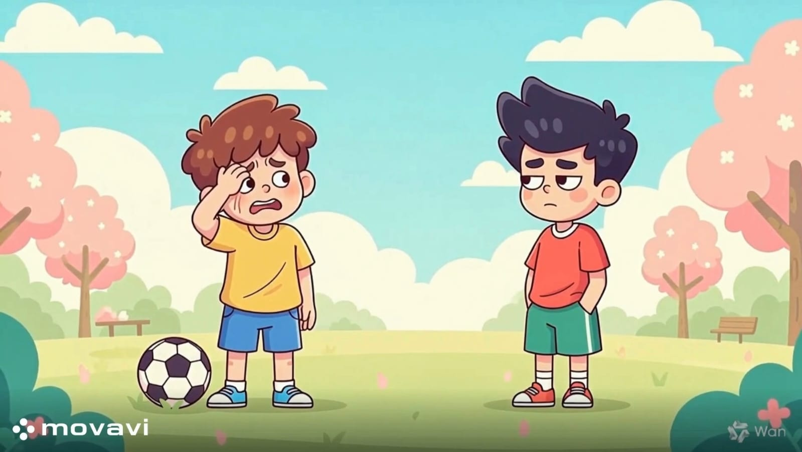

الاعتذار
بعد الانتهاء من تدريس هذا الدرس يفترض أن يكون التلميذ قادرًا على:
أن يُميز بين الاعتذار الحقيقي (الندم + الإصلاح) والاعتذار غير الصادق.
أن يُدرك أن الاعتذار قوة وشجاعة وليس ضعفًا، وأنه يحافظ على الصداقات.
أن يستخدم عبارات اعتذار واضحة (أنا آسف، أرجو المعذرة) مع اقتراح حل لإصلاح الخطأ.

نشاط (1):
الموقف:
كنت تجري في فناء المدرسة واصطدمت بزميلك دون قصد، مما أدى لسقوط أدواته على الأرض.
1. ما رأيك في هذا التصرف؟ وكيف تشعر تجاه زميلك؟
2. ما الكلمات المناسبة التي ستقولها له وأنت تساعده في جمع أدواته؟
3. لعب أدوار: مثل الموقف مع زميلك، وتدرب على استخدام نبرة صوت هادئة وملامح وجه تدل على الأسف.
نشاط (2):
الموقف :
كنت تلعب بالكرة داخل المنزل وكسرت "مزهرية" تحبها والدتك كثيرًا.
1. هل الأفضل الاختباء أم مواجهة الموقف؟ ولماذا؟
2. اقترح عبارة اعتذار مناسبة لوالدتك تبين فيها أنك لن تكرر هذا الفعل.
3. تختلف لغة الاعتذار باختلاف الشخص: كيف ستعتذر لوالدتك مقارنة باعتذارك لأخيك الصغير لو انكسرت لعبته؟
نشاط (3):
الموقف :
: وعدت صديقك أن تتصل به لتذاكرا معاً، لكنك نسيت تماماً ونمت مبكراً. في الصباح قابلك الصديق وهو عاتب عليك.
1. بماذا تبدأ حديثك مع صديقك لتلطيف الأجواء؟
2. ما التعبير المناسب للاعتذار في الهاتف؟ (هل تكتفي بكلمة "آسف" أم تشرح السبب بلباقة؟).
3. اختر الرد الصحيح:
- "أنا حر، لقد كنت نائماً!"
- "أعتذر منك بشدة يا صديقي، لقد غلبني النوم ولم أقصد تجاهلك."
نشاط (4):
الموقف :
استعرت قلماً من زميلك، وبالخطأ ضاع منك أو كُسر
1. كيف تعبر عن أسفك لزميلك؟
2. هل يكفي الاعتذار اللفظي؟ أم يجب عليك محاولة تعويضه بقلم آخر؟